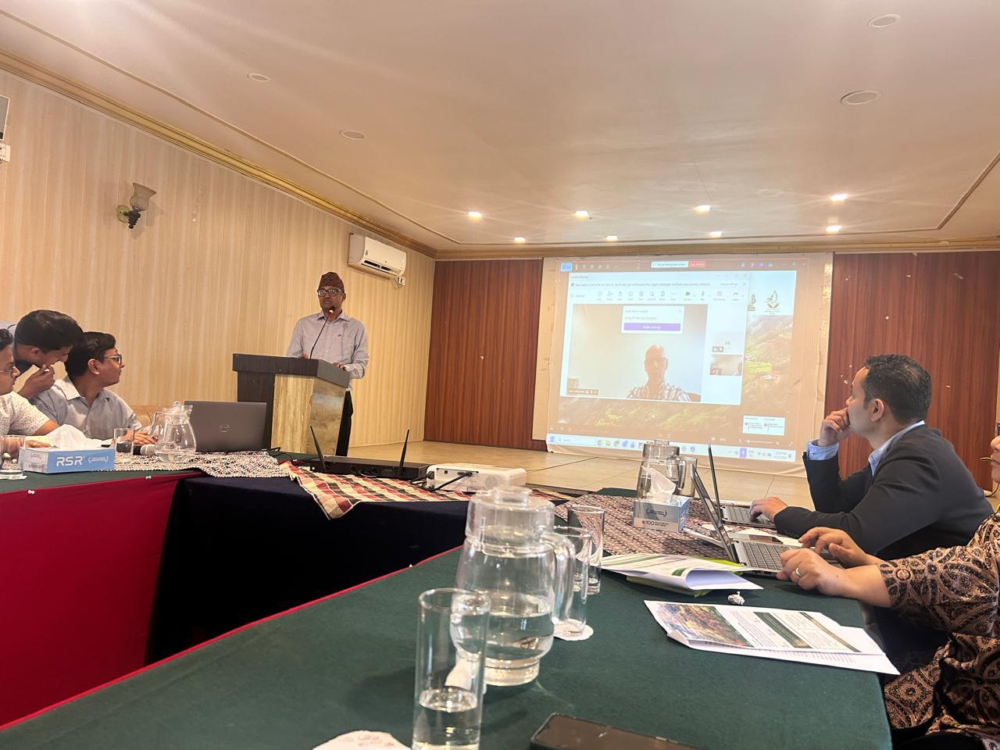

TRANSMIT Inception Workshop, Dhangadhi, Nepal (12 June 2026). Photo: Sundar Sharma.
Loading…
A region of the Global Wildland Fire Network (GWFN), coordinating fire management cooperation across South Asia. A specialized Center of the family of 9 Regional Fire Management Resource Centers coordinated by the Global Fire Monitoring Center (GFMC).
Programs
RSAFMRC helps support NFMC in the implementation of TRANSMIT.

TRANSMIT Inception Workshop, Dhangadhi, Nepal (12 June 2026). Photo: Sundar Sharma.
Partner project
The Nepal Forest Fire Management Chapter (NFMC) has entered into a collaboration agreement with Georg-August-Universität Göttingen (UGOE), Germany, as part of the TRANSMIT research initiative. The project is funded by the German Federal Ministry for Agriculture, Food and Homeland (BMLEH) and brings together international partners to strengthen sustainable forest management, improve climate resilience, and reduce disaster risks across the Himalayan region.
Lead institution: Georg-August-Universität Göttingen, Germany
Executing institution: Campus Centre of Biodiversity and Sustainable Land Use
Project coordinator: Prof. Dr. Ralph Mitlöhner
Project location: The Mahakali (Sharda) River Basin across western Nepal and northwestern India
Duration: 1 January 2026 – 31 December 2028
Partners
Germany · Lead institution
Germany
Nepal
Nepal
India
Nepal
Germany · non-funded partner
Purpose
The TRANSMIT project focuses on developing transboundary approaches to sustainable forest management across the Himalayas. The collaboration aims to:
Research and publications
The agreement promotes open scientific collaboration while protecting confidential information and intellectual property. Both parties encourage joint publications and will make project results publicly available whenever appropriate to support sustainable forest management.
This partnership marks an important step in strengthening international collaboration on wildfire management and sustainable forestry in the Himalayan region. Through shared research, technical expertise, and knowledge exchange, the TRANSMIT project aims to deliver practical solutions that help communities build resilience against climate change and wildfire risks.
Scope of work
Overall coordination of the regional network's activities and partner engagement.
A regularly updated list of network members published on the web, with members receiving circular mails.
Regional and national systems for prompt fire detection and improved response time.
Fire monitoring linked with the GOFC/GOLD Regional Fire Implementation Team.
Integrated fire management approaches with emphasis on community participation.
Transnational synergies in fire research, remote sensing, and technology transfer.
A Regional Training Center, run as a joint venture with GFMC, for field practice and professional development.
Development and strengthening of national fire management policies, strategies, and legal frameworks.